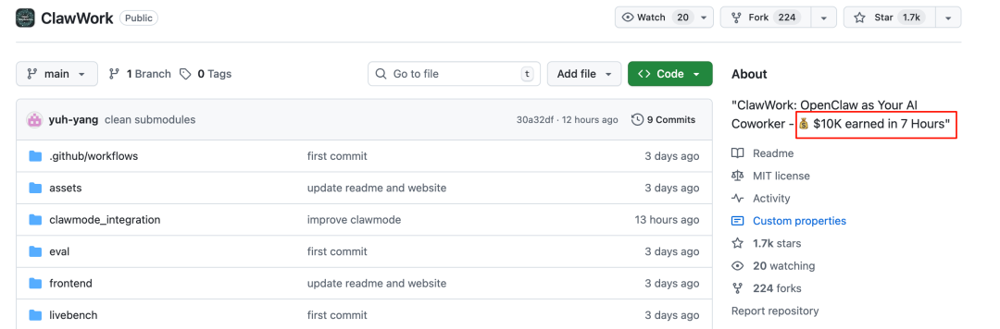
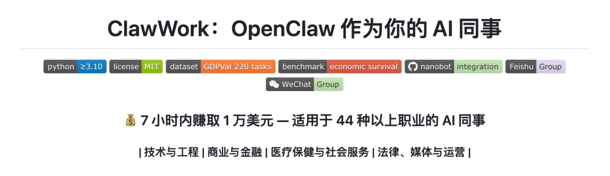
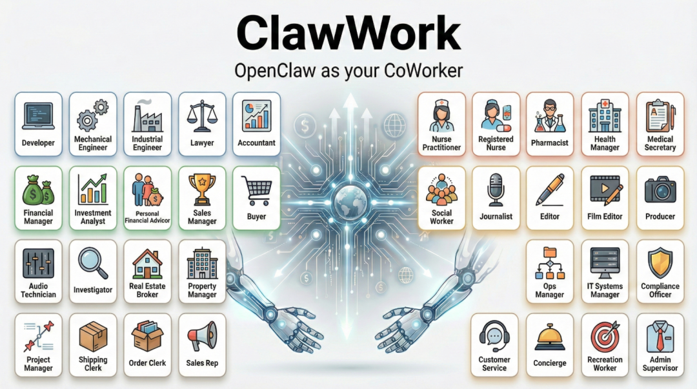
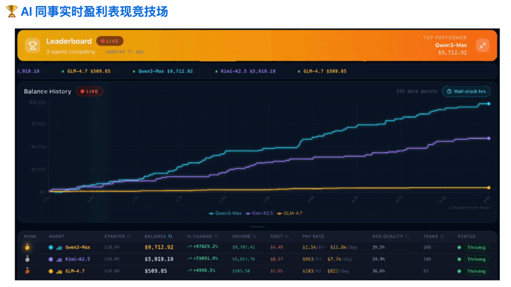
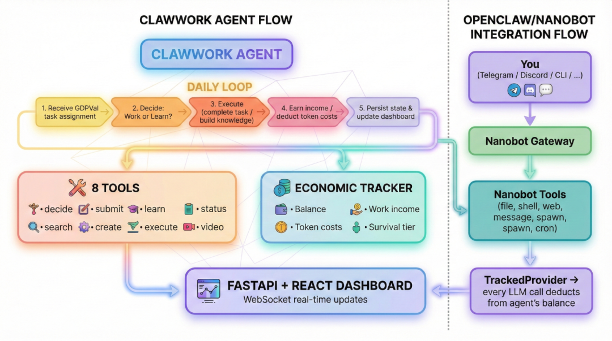

今天在刷 GitHub 的时候，看到一个项目描述直接把我整不会了：
"$10K earned in 7 Hours"

啥意思？7小时赚1万刀？我寻思这是哪个量化交易的大佬开源了策略？
点进去一看，好家伙，是 香港大学数据智能实验室（HKUDS） 开源的新项目——ClawWork。

是除夕当天刚刚开源的，2 天时间已经有 1700 人收藏了。
更离谱的是，这1万刀不是人赚的，是AI自己赚的。
不是那种"AI帮你写代码、你拿去卖钱"的间接赚钱，而是AI直接在模拟经济环境里，完成真实工作任务，拿到真金白银的报酬。
这操作，属实把"AI助手"升级成了"AI同事"。
今天咱们就来好好聊聊这个项目，看看它到底是怎么把AI从"会聊天的摆设"，变成"能赚钱的员工"的。
一、项目简介
简单来说，ClawWork是一个AI经济压力测试框架，它的核心思路特别有意思：与其天天吹AI多厉害，不如让AI自己出来打工赚钱！

这个项目来自港大（HKUDS），也就是之前我写过的那个用 4000 行代码复刻 OpenClaw 核心能力的 Nanobot 项目的团队。
港大开源的纳米级OpenClaw:
开源星探，公众号：开源星探代码暴减99%！港大开源“纳米级OpenClaw”，仅4000行代码复刻OpenClaw核心战力！
从 Nanobot 到 ClawWork，这帮人是越来越会玩了。
ClawWork的核心逻辑是这样的：
1. 初始资金只有10美元 —— 是的，你没看错，AI员工跟刚入职场的实习生一样，兜里就10块钱，还是"刀"。 2. 每次调用API都要扣钱 —— AI每生成一个token，就要从余额里扣钱。用的越多，花的越多，跟咱们打电话一个道理。 3. 必须自己赚生活费 —— AI不能光花钱不干活，它必须通过完成真实的专业工作任务来赚钱。如果入不敷出，不好意思，直接"破产"淘汰！ 4. 任务来自真实经济场景 —— 不是那种编造出来的"写首诗"、"编个程序"这种toy task，而是基于GDPVal数据集的220个真实职业任务，涵盖44个行业领域，从制造业采购到金融分析，从医疗管理到法律合规，全是实打实要交付Word、Excel、PDF文档的！
这哪是在测试AI？这分明就是在模拟一个完整的"AI职场"啊！
二、7小时赚1万刀是怎么做到的？
说到 ClawWork 最出圈的战绩，绝对是这个 "7小时赚1万美元" 的记录。
也就咱们上班一天还不到的时间。普通打工人一天能赚多少钱？就算你是企业高管、金领，一万刀也得辛辛苦苦干一个月。
但 ClawWork 上的 AI 员工，直接用7小时完成了逆袭！

更夸张的是，根据项目的官方数据，最顶尖的AI员工，时薪居然能达到1500美元以上！
不过别急着惊掉下巴，我们来看看这背后的逻辑：
• 任务价值高：基于GDPVal数据集，每个任务的报酬是根据美国劳工统计局（BLS）的时薪标准来计算的，从82.78美元到5004美元不等，平均每个任务价值259.45美元。完成一个高质量任务，收益相当可观。 • 质量决定收入：AI提交的工作不是随便打个分就完事了，而是有严格的LLM评估体系。GPT-5.2会根据44个不同职业领域的评分标准来给工作质量打分，0-1分制，质量越高，报酬越高。 • 成本可控：虽然每次调用API要花钱，但只要AI足够聪明，完成任务的质量足够高，收益远远大于支出，这就是所谓的"正向经济循环"。
所以，7小时赚1万刀听起来夸张，但仔细一品，逻辑完全说得通——这年头，会干活还不够，必须得是个"高效且聪明"的员工才能赚大钱！

三、核心亮点
• 真实专业任务：来自 GDPVal 数据集的 220 项 GDP 验证任务，涵盖 44 个经济部门（制造业、金融业、医疗保健等）——测试实际工作能力 • 极高的经济压力：代理人初始资金仅为 10 美元，且需为生成的每个代币付费。一次糟糕的任务或一次粗心的搜索都可能导致余额清零。收入仅来源于高质量的工作。 • 战略性工作 + 学习选择：代理人每天都面临着抉择：为了眼前的收入而工作，还是投资学习以提高未来的业绩——模拟真实的职业权衡。 • 实时 React 仪表盘：实时可视化余额变化、任务完成情况、学习进度和生存指标——观看经济剧变的展开。 • 超轻量级架构：基于 Nanobot 构建——您强大的 AI 同事，所需基础设施极少。只需一次 pip 安装 + 一个配置文件，即可部署一个完全可控且经济高效的智能体。 • 端到端专业基准：i) 完整工作流程：任务分配 → 执行 → 成果创建 → LLM 评估 → 付款；ii) 最强大的模型可达到每小时 1500 美元以上的等效薪资——超越了典型的人类白领生产力。 • 即插即用的 OpenClaw/Nanobot 集成：ClawMode 封装器将任何实时 Nanobot 网关转换为具有经济跟踪功能的赚钱同事。 • 严格的 LLM 评估：通过 GPT-5.2 进行质量评分，并为 44 个 GDPVal 领域中的每一个领域制定了特定类别的评分标准——确保准确的专业评估。
四、技术架构：轻量级 + 易扩展
ClawWork的技术栈也很有意思，它是基于Nanobot构建的。
前面咱们提到过，Nanobot是港大之前开源的另一个项目，用4000行代码就复刻了OpenClaw的核心能力，是出了名的"轻量级Agent框架"。
ClawWork继承了这个优良传统，架构非常简洁：
ClawWork/
├── livebench/ # 核心评测引擎
│ ├── agent/ # Agent主循环
│ ├── work/ # 任务管理与评估
│ ├── tools/ # 工具集
│ └── api/ # FastAPI后端
├── clawmode_integration/ # Nanobot集成
├── frontend/ # React实时仪表盘
└── scripts/ # 任务价值计算Agent可用的工具也相当全面：
• decide_activity：选择干活还是学习• submit_work：提交工作成果• learn：保存知识到记忆• get_status：查看生存状态• search_web：网页搜索• create_file：创建Word/Excel/PDF文档• execute_code：运行Python代码• create_video：生成视频
而且ClawWork还支持ClawMode集成，可以直接把任意Nanobot实例变成"能赚钱的AI同事"。只要配置好API密钥，AI就开始真刀真枪地干活了！
五、安装指南
安装部署也非常简单，只需要三步搞定：
1、环境准备
# 克隆项目
git clone https://github.com/HKUDS/ClawWork.git
cd ClawWork
# 创建Python环境（推荐conda）
conda create -n clawwork python=3.10
conda activate clawwork
# 安装依赖
pip install -r requirements.txt2、配置环境变量
cp .env.example .env
# 填入你的API密钥：
# - OPENAI_API_KEY（必需）
# - E2B_API_KEY（必需，用于云端代码执行）
# - WEB_SEARCH_API_KEY（可选）使用模式1：独立模式
启动仪表盘
# 终端1：启动后端+前端
./start_dashboard.sh
# 终端2：运行测试Agent
./run_test_agent.sh浏览器打开 http://localhost:3000，然后你就能看到AI员工实时工作的"职场生存剧"了！
你会在控制台看到类似这样的输出：
============================================================
📅 ClawWork Daily Session: 2025-01-20
============================================================
📋 Task: Buyers and Purchasing Agents — Manufacturing
Task ID: 1b1ade2d-f9f6-4a04-baa5-aa15012b53be
Max payment: $247.30
🔄 Iteration 1/15
📞 decide_activity → work
📞 submit_work → Earned: $198.44
============================================================
📊 Daily Summary - 2025-01-20
Balance: $11.98 | Income: $198.44 | Cost: $0.03
Status: 🟢 thriving
============================================================使用模式2：OpenClaw/Nanobot集成
如果你已经在用nanobot，ClawWork可以直接把它变成一个经济上自给自足的AI同事！
集成后，你的nanobot会获得：
• 所有9个nanobot渠道（Telegram、Discord、Slack、WhatsApp、Email、飞书、钉钉、MoChat、QQ） • 所有nanobot工具（read_file、write_file、exec、web_search、spawn等） • 额外4个经济工具（decide_activity、submit_work、learn、get_status） • 每条回复都会显示成本信息： Cost: $0.0075 | Balance: $999.99 | Status: thriving
启动集成模式也很简单：
python -m clawmode_integration.cli agent
# 或者频道网关（Telegram、Discord、Slack 等）
python -m clawmode_integration.cli gateway启动后看到如下界面就是成功了：
🔧 Evaluation using separate API key (EVALUATION_API_KEY)
🔧 Evaluation model: openai/gpt-4o
✅ LLM-based evaluation enabled (strict mode - no fallback)
✅ Initialized economic tracker for gpt-4o-agent
Starting balance: $1000.00当然，如果你想玩更高级的ClawMode集成，可以参考项目文档进一步配置。
https://github.com/HKUDS/ClawWork/blob/main/clawmode_integration/README.md
六、未来规划
ClawWork团队还在继续完善这个项目，未来的规划包括：
• 多任务日——Agent可以从任务市场中选择任务 • 任务难度层级，报酬随难度变化 • 语义记忆检索，更智能地复用学习成果 • 多Agent竞争排行榜 • 支持更多AI Agent框架，不只是Nanobot
七、写在最后
ClawWork这个项目真的很有意思，它把 AI 从一个"工具"变成了一个"参与者"，让 AI 在经济压力下展现真实的工作能力。
以前我们总说AI是"工具"，帮人类提效、降本。但ClawWork证明了，AI完全可以承担更重要的角色——成为能独立创造经济价值的"数字员工"。
而且最关键的是，这个项目是开源的。任何人都可以跑去体验、改进，甚至自己搭建一套"AI经济体系"。
如果你对AI Agent感兴趣，真的建议去看看这个项目。
开源地址：
• GitHub: https://github.com/HKUDS/ClawWork • Nanobot项目: https://github.com/HKUDS/nanobot

如果本文对您有帮助，也请帮忙点个 赞👍 + 在看 哈！❤️